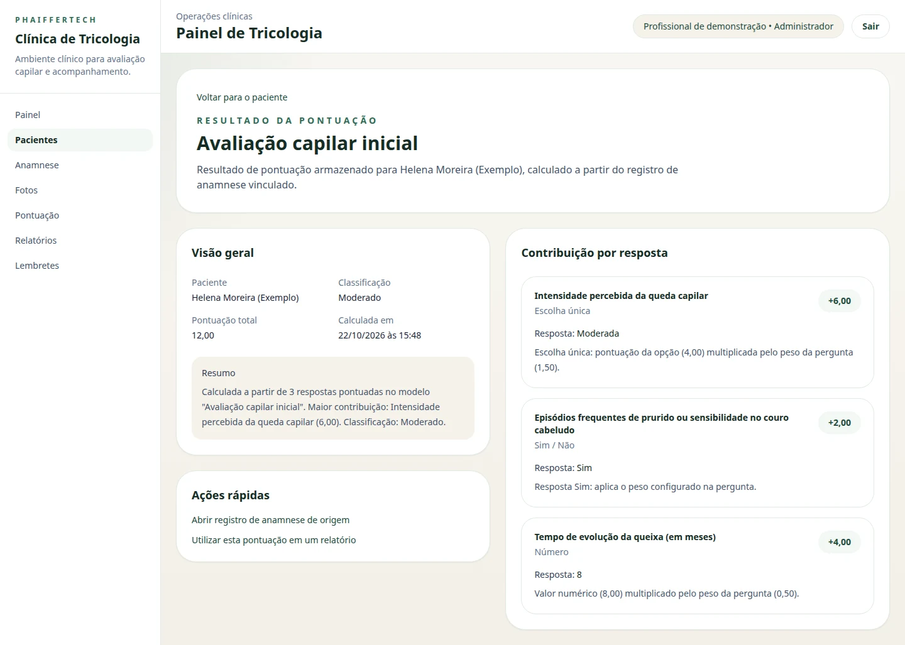
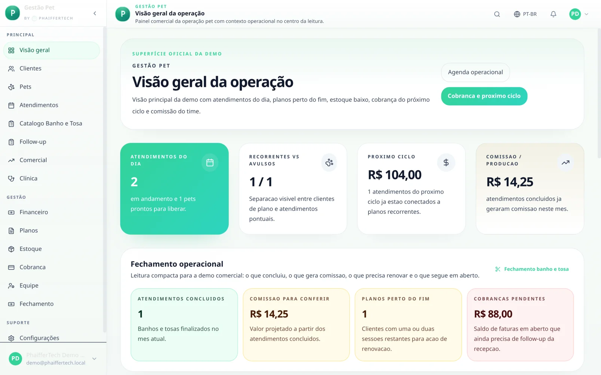
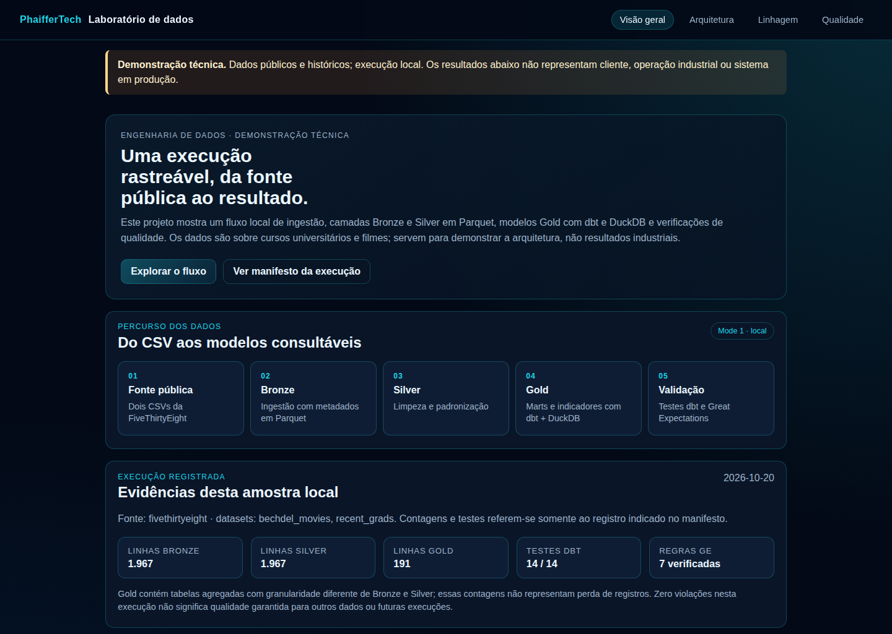

Projetos / Portfólio
Evidências, não promessas.
Cada ficha diz o que o projeto é, em que estágio está, o que demonstra e onde conferir. Esta página reúne apenas trabalhos que podem ser mostrados publicamente.
5 projetos
-
Demonstração técnica
Lakehouse NYC TLC com Spark e Delta Lake
Viagens públicas de táxi de Nova York processadas em camadas Bronze, Silver e Gold, com contrato versionado, regras de qualidade e monitoramento de drift entre meses.
- Estágio
- Execução local registrada
- Demonstra
- Rastreabilidade: cada linha removida fica associada à regra que a removeu.
- Tecnologias
- Python, PySpark, Delta Lake
- Evidência
- 5.892.141 viagens limpas em janeiro e fevereiro de 2024; commit
300c16ccom CI aprovada.
-

Produto próprio
Plataforma Clínica de Tricologia
Aplicação web para o atendimento em tricologia: prontuário, anamnese configurável, pontuação capilar explicada resposta a resposta, fotos de evolução e laudos em PDF.
- Estágio
- Em desenvolvimento · execução local
- Demonstra
- Regras de negócio explicáveis e histórico preservado quando um modelo de anamnese muda.
- Tecnologias
- Next.js, Spring Boot 3.3 com Java 21, PostgreSQL com Flyway
- Evidência
- Repositório público; testes de integração no backend; capturas com dados fictícios.
- Limites
- Proteção contra CSRF pendente antes de qualquer uso fora do ambiente local.
-

Produto próprio
Plataforma de Gestão para Negócios Pet
Aplicação em desenvolvimento para reunir rotinas de pet shops, banho e tosa e clínicas veterinárias: agenda, estoque, cobrança e rotinas clínicas.
- Estágio
- Em desenvolvimento
- Demonstra
- Vários fluxos operacionais conectados em uma mesma aplicação.
- Evidência
- Capturas do ambiente de demonstração, com dados fictícios.
- Limites
- Sem nome comercial definido; não está em operação comercial.
-

Demonstração técnica
Plataforma de Dados, Lakehouse Local
Dois conjuntos públicos históricos da FiveThirtyEight, da ingestão em Parquet aos modelos analíticos com dbt e DuckDB, com verificações de qualidade.
- Estágio
- Execução local registrada
- Demonstra
- Camadas Bronze, Silver e Gold com testes de dados a cada execução.
- Tecnologias
- Python, Parquet, dbt, DuckDB, Great Expectations
- Evidência
- Registro de 20/10/2026 com 14 testes dbt e 7 verificações de qualidade aprovados.
- Limites
- Dados ilustrativos sobre cinema; não é uma operação industrial.
-
Vídeos públicos:
EGC Demo v2, por Willian Phaiffer
EGC Pitch EGCxSOL, por Felipe MarzochiOpen source · contribuição individual
Extended Global Context (EGC)
Projeto aberto dedicado a ferramentas e gestão de contexto no desenvolvimento assistido por IA.
- Participação
- Contribuição individual, sem titularidade da PhaifferTech.
- Demonstra
- Trabalho em projeto aberto, com revisão e colaboração pública.